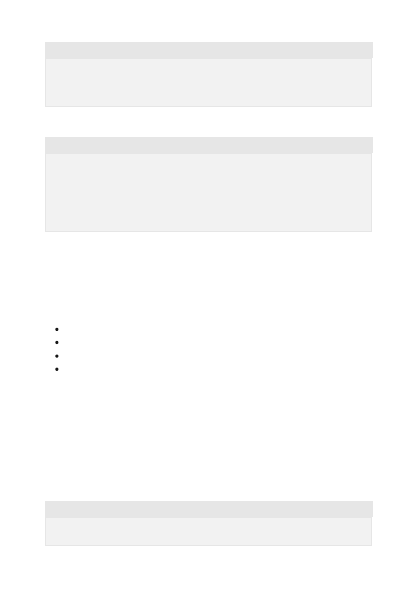

The format of a basic Chat Completion is as follows:
A conversation with one example answer followed by a question would look like:
The system role also known as the system message is included at the beginning of the
array. This message provides the initial instructions to the model. You can provide
various information in the system role including:
A brief description of the assistant
Personality traits of the assistant
Instructions or rules you would like the assistant to follow
Data or information needed for the model, such as relevant questions from an FAQ
You can customize the system role for your use case or just include basic instructions.
The system role/message is optional, but it's recommended to at least include a basic
one to get the best results.
After the system role, you can include a series of messages between the user and the
assistant.
{"role": "system", "content": "Provide some context and/or instructions to
the model"},
{"role": "user", "content": "The users messages goes here"}
{"role": "system", "content": "Provide some context and/or instructions to
the model."},
{"role": "user", "content": "Example question goes here."},
{"role": "assistant", "content": "Example answer goes here."},
{"role": "user", "content": "First question/message for the model to
actually respond to."}
System role
Messages
{"role": "user", "content": "What is thermodynamics?"}